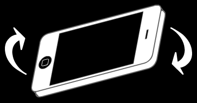
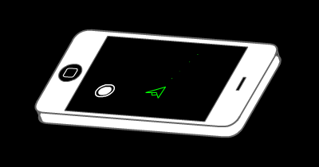
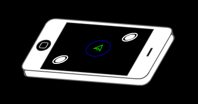

This game uses your device gyroscope sensors to move the spaceship around space. Hold your phone as if it was laid on a flat straight table and tilt the device towards the direction where you want your spaceship to move. Depending on how your holding your device, the controls will be inverted.
You can launch missiles by tapping on the screen once. Your ship is limited to launching 10 missiles at a time before the ship requires a few seconds to load more missiles.
Your spaceship comes equipped with a protective shield that absorbs all enemy missiles and makes you immune to collisions. To activate the shield, tap and hold with two fingers, the shield will remain activate as long as you have two fingers on the screen. Your shield is not infinite and will break if you get hit by missiles a lot.
 BACKThe vastness of space was considered the last frontier of exploration for mankind. Shortly after we landed on the moon, the curiosity to explore beyond our solar system became evident. Movies, books and stories were made describing the possibility of human kind coming into contact with an alien civilization. However, even after human colonization of space began 2 centuries after a space elevator was developed in the year of 2137. No advanced alien civilization was found. We began colonizing habitable planets near our solar system. One of the first and biggest colonies was Chromos. It is located 25 light years away from planet Earth, and holds the largest human population after Earth. After Chromos was colonized, we expanded our radius of exploration to 45 light years from Earth. We colonized 5 other habitable planets in different solar systems. These 5 planets had small but growing human populations. We were able to reach these planets thanks to limited wormhole technology developed by scientists in the 2500s. These wormholes were considered limited because the energy necessary to maintain the wormhole open and allow ships through was proportional to the distance. Each colony needed to harvest enough energy from the nearby star for a full two weeks to open a wormhole connecting to Earth. Chromos only needed a week of harvesting but for the outer colonies it was little over a week. For this reason, all colonies agreed to open their portals every two weeks to exchange supplies, communication and ships with Earth.
By the end of the 2700s political leaders back in Earth gave the order to develop a new far more advanced exploration program. This program was meant to expand our radius of exploration to over 1,000 light years from Earth and colonize any possible habitable planet. When the new far more powerful wormhole portal was created in the outer colonies, leaders were quick to send a large exploration crew consisting of 4 mother ships and over 25 fuel stations. The portal was also ordered to remain open for three full days. By the third day, one of the mother ships spotted strange objects in one of the planets closest to the star. This planet had what appeared to be a base consisting of different facilities and triangle-like contractions scattered all around and they appeared to be manufacturing some sort of mechanical creatures. This was quickly reported back to Earth and the ship was order to decent on the planet to further explore. It didn’t take more than 30 minutes until 5 strange looking ships appeared and began attacking our mother ship. The mothership was able to scan the ships and generate a report back to Earth before being destroyed. Leaders back in Earth gave the order to close the portal and abandon all exploration crew behind. Chaos erupted all across the colonies and pushed leaders to enforce martial law. At last, human kind came in contact with an advanced civilization but it didn’t go down as friendly as we thought. The report generated by the mothership only included general technological specifications but it was enough to indicate that whoever attacked our ship was far more advanced technologically than us. The government of Earth and all of its colonies gave the order to invest heavily in a defense program. New ships capable of launching nuclear missiles and equipped with protective shields were developed. A secretive program with the aim to develop new weapons of mass destruction was launched as well. Every colony and Earth anxiously waited for the day this violent secretive alien civilization would appear to attack us.
Nevertheless, 54 years passed and still no signs of any aliens. Martial law was lifted and things appeared to be going back to normal in Earth and all the colonies. On the second week of May, 2849, two of our most far away colonies, Cygnus and Quasis failed to open their portals. A defense fleet was dispatched and sent to Cygnus. Nothing but destruction was found, the space station off the planet was completely destroyed and all that was left standing was a small fleet of our ships. We were informed by Cygnus that the aliens that attacked our exploration fleet had returned but were defeated. They were given the name of Equitans. On the following day a new fleet of Equitan ships appeared and began attacking once again. The defense fleet that was sent to rescue Cygnus fled and reported back to Earth. Once they arrived back in Earth, they were informed that all of the outer colonies were attacked and were under Equitans control. The only remaining human colonies are Chromos and Sirius. It is up to you to defend planet Earth and the remaining colonies!
This game was possible thanks to the work of these wonderful people!